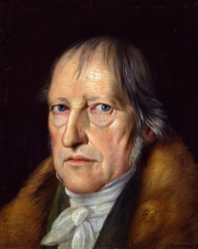

← The philosophy mapModern · The 1800s

Meet the thinker · B1
G. W. F. Hegel
A German philosopher who saw history as a great story in which ideas clash and grow.
Guess first
Hegel called Napoleon...
A life in a few steps
- 1770Born in Stuttgart.
- 1788At university he shares a room with the poet Hölderlin and the philosopher Schelling.
- 1806Finishes his first great book as Napoleon's army takes the town of Jena.
- 1818Becomes professor in Berlin, the most famous philosopher in Germany.
- 1831Dies in Berlin.
Why Hegel still matters
His idea that history moves forward through conflict and change strongly influenced Karl Marx and many later thinkers.
Main works
Phenomenology of SpiritScience of LogicPhilosophy of Right
Did you know?
When he saw Napoleon ride through Jena, he called him 'the world-soul on horseback'.
Hegel: History Is Going Somewhere
The world spirit: is history going somewhere?
More lessons on Hegel
The World SpiritTalk about it
- Is the world getting better? Is history moving in a direction?
- Can two opposite ideas both be partly right?
 ← Kant
← Kant Schopenhauer →
Schopenhauer →